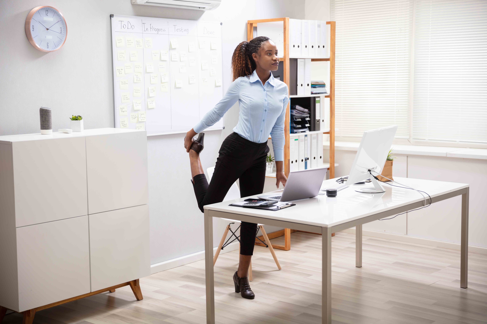
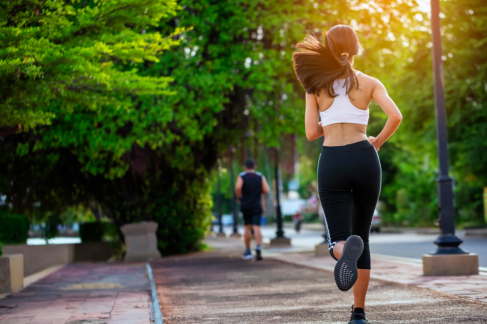
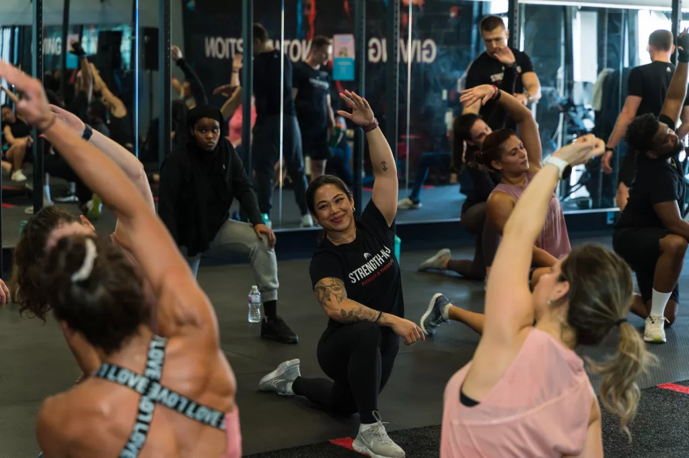
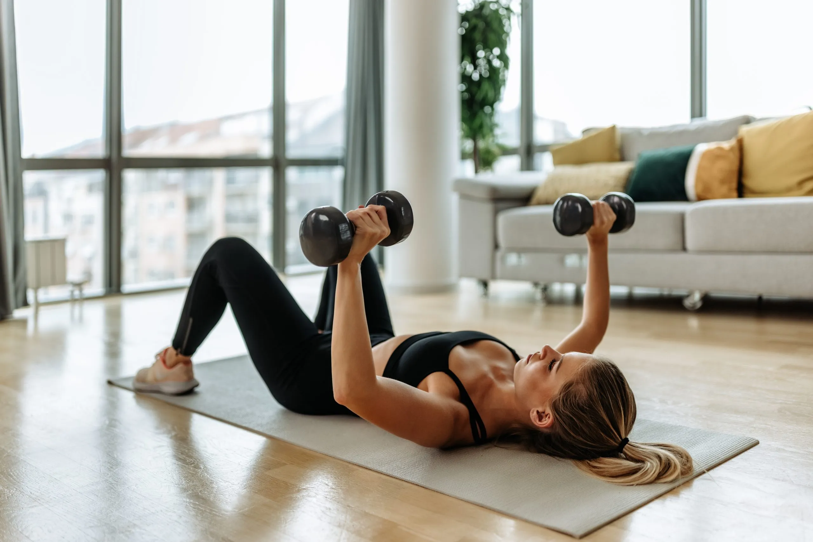

Balancing Sedentary Work with an Active Lifestyle
Date: June 25, 2024
Balancing work and fitness can be challenging. Balancing a desk job with an active lifestyle can be challenging, but it's essential for maintaining both physical and mental health.Here’s how I integrate physical activity into my daily routine to stay active and healthy:
Regular Stretch Breaks
Taking regular breaks to stretch is crucial. Sitting for extended periods can lead to stiffness and discomfort. I make it a point to stand up, stretch, and walk around every hour.
Outdoor Activities
Spending time outdoors is a great way to stay active. I enjoy activities like hiking, cycling, and running. These not only provide excellent exercise but also a refreshing change of scenery.
Joining Fitness Classes
Joining fitness classes helps me stay motivated and consistent with my workouts. Whether it’s yoga, pilates, or a high-intensity interval training class, being part of a group keeps me accountable.
Home Workouts
When I can't make it to the gym, I do home workouts. There are plenty of online resources and apps that offer guided exercise routines. This flexibility ensures I can fit in a workout regardless of my schedule.
Healthy Eating
Maintaining a balanced diet is just as important as staying active. I focus on eating nutritious meals that fuel my body and mind. Healthy eating habits contribute to overall well-being and energy levels.
Walking Meetings
Whenever possible, I opt for walking meetings. Instead of sitting in a conference room, walking while discussing work topics keeps me moving and adds a bit of physical activity to my day.